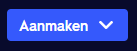
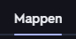

Hoe gebruik ik Quizlet? (Map)
-

Map aanmaken stap 1
Bovenaan zou u deze knop moeten zien. Klik op deze knop om een nieuwe map aan te maken. -
Map aanmaken stap 2
Klik dan op "Map" om een nieuwe klas aan te maken. -
Map aanmaken stap 3
Hier kan u uw nieuwe map een titel/naam geven. Als u wilt kan u ook een beschrijving toevoegen. -
Mappen terugvinden stap 1
Om uw aangemaakte klassen terug te vinden drukt u op "Jouw bestanden". -

Mappen terugvinden stap 2
Daarna drukt u op "Mappen". Uw aangemaakte klassen komen eronder te staan.